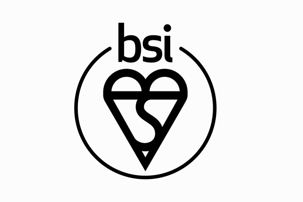
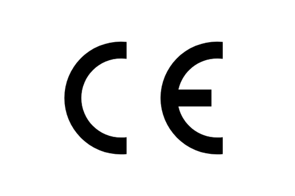
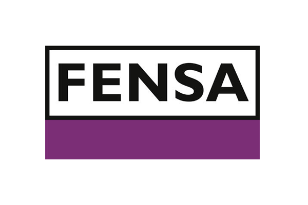
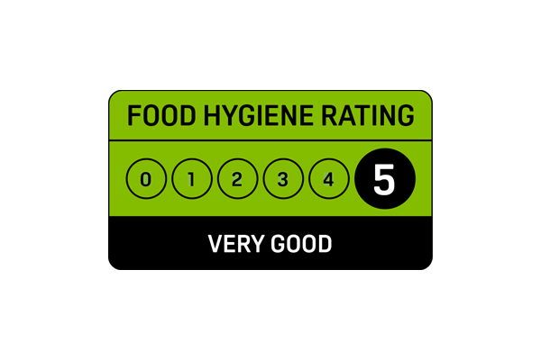
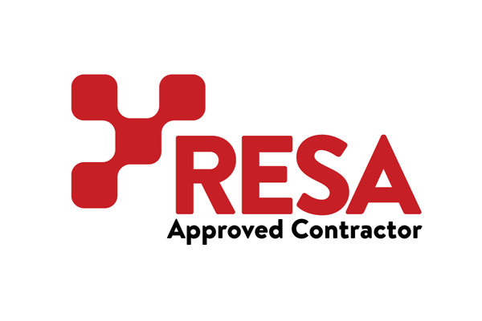
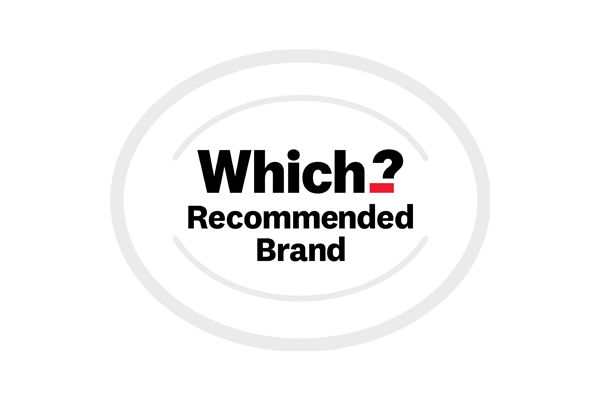

The fake trust marks 1 in 3 fell for
We wanted to know which trust marks Brits recognise, which ones they actually rely on, and whether they could be fooled by fakes we’d invented.
10 real trust marks, three impostors






Alongside ten well-established trust marks, we designed three fakes:
Each had a plausible name and a professional logo. Unsuspecting survey takers saw all thirteen one at a time, in a random order, rating each on a five-point scale from ‘never seen it’ to ‘relied on it when making an important decision.’ The fakes were a test of what we might call the high-vis jacket theory: whether the mere appearance of authority and verification is enough to trigger a feeling of familiarity, even trust, where in reality there is nothing behind it at all.
Almost 1 in 3 (31.9%) wrongly thought they recognised at least one of the three marks we made up, and 1 in 6 (16.7%) said they knew what at least one meant.
UKPAS, a plumbing-themed trust mark, drew the most claimed familiarity. The same mistaken respondents rated the real marks in a plausible way, picking out the Food Hygiene Rating Scheme, Trustpilot, Gas Safe and Google Reviews in the patterns we’d expect, suggesting they were paying attention and genuinely felt at least one of the fakes was real and familiar.
We asked: ‘How familiar are you with this trust mark?’
| Trust mark ▼ | Never seen ▼ | Seen, don’t know its meaning ▼ | Know it, but doesn’t influence me ▼ | Found it useful ▼ | Relied on it ▼ | |
|---|---|---|---|---|---|---|
| Food Hygiene Rating Scheme | 3.8% | 1.7% | 9.5% | 51.2% | 33.8% | |
| Trustpilot | 0.3% | 1.6% | 17.0% | 51.8% | 29.3% | |
| Gas Safe Register | 23.4% | 11.0% | 15.7% | 26.7% | 23.3% | |
| Google Reviews | 1.8% | 1.8% | 22.8% | 50.7% | 22.9% | |
| Which? Recommended | 7.2% | 5.0% | 23.1% | 51.0% | 13.7% | |
| CE / UKCA Marking | 11.9% | 34.3% | 26.5% | 19.3% | 8.1% | |
| Red Tractor Assurance | 16.9% | 14.8% | 31.8% | 29.8% | 6.7% | |
| BSI Kitemark | 31.8% | 21.7% | 18.8% | 21.1% | 6.5% | |
| FENSA | 64.9% | 14.4% | 6.9% | 9.7% | 4.0% | |
| TrustMark | 65.2% | 18.5% | 10.0% | 5.3% | 1.0% | |
| RESA Fictitious | 85.7% | 8.5% | 2.7% | 2.0% | 1.0% | |
| UKPAS Fictitious | 78.0% | 12.0% | 6.3% | 3.0% | 0.8% | |
| TrueReview Fictitious | 84.9% | 7.0% | 4.1% | 3.5% | 0.5% |
Later in the survey, far-removed from the trust mark familiarity questions, we asked how confident people were that they could spot a fake trust mark. Those who said ‘Very confident’ were over 3 times more likely to have claimed familiarity with one of our made-up marks (33.2%) than those who were ‘Not at all confident’ (9.9%).
At first glance, this looks like the classic Dunning-Kruger effect: people with low ability (or little knowledge) overestimate themselves because they lack the knowledge to recognise their mistakes.
Another possible explanation is that a logo that looks professional feels familiar, and the brain can mistake that ‘fluent’ feeling for genuine prior exposure. Researchers call this familiarity-fluency conflation.1–4 In prior research on overconfidence in self-assessments, the pattern was more visible in men than women, and it was in our data as well: 37.4% of men claimed familiarity with a made-up mark, versus 26.7% of women.5–7
Those who were most confident they could spot a fake mark were over three times more likely to claim familiarity with one we’d invented.
The real marks tell their own story. The Food Hygiene Rating Scheme (FHRS), the green-and-black sticker in the chip-shop window, is the single most-relied-on trust mark in the survey: 33.8% of UK adults said they had relied on it for an important decision, ahead of Trustpilot (29.3%) and Gas Safe (23.3%).
Of those we tested, Trustpilot, Google Reviews, FHRS and Which? Recommended are the marks Britain understands best: 95-98% of those who’ve seen each one can also say what it stands for.
At the other end, recognition does not always translate into use. CE / UKCA, the regulatory mark that says a product meets UK or EU safety, health and environmental standards, appears on toys, electronics, machinery and a great deal else; 88% of UK adults say they’ve seen it, but 34% have only seen it, without ever being able to say what it means.
The same recognised-but-rarely-used pattern shows up for the BSI Kitemark, which signals that a product or service has passed independent testing against British Standards: around half of UK adults say they know what it stands for, but only 6.5% say it has guided an important decision.
All of this matters because, out in the real world, anyone in the UK can set themselves up as a certification body and start issuing marks; there is no law against it. Our ability, or inability, to determine whether a trust mark comes from a genuine, trustworthy authority or the equivalent of an unqualified imposter wearing a high-vis jacket they bought on eBay, could therefore make all the difference. And as we’ll see later, 7 in 10 Brits have never checked whether a trust mark is genuine, or wouldn’t know how to. Next, we’ll see how the signals we rely on differ according to the type of purchase decision we need to make.
Britain’s trust league table
We asked people to rank trust signals across five everyday buying decisions.
We asked: “When choosing where to spend your money, which of these would you trust most to least?”
trusted 75% 50% 25% Less
trusted
The figures above are win rates. Each person ranked the signals in the given scenario from most to least trusted, and a signal’s win rate is how often, on average, it placed above the other signals in those rankings.
A 100% win rate would mean everyone placed it first. A 0% win rate would mean everyone placed it last. A 50% win rate would mean a signal that lands, on average, in the middle of the field. Personal recommendation tops Britain’s trust league in four of the five scenarios. A friend or family recommendation reaches a win rate of 83.4% for choosing a restaurant, meaning it came out above whichever signal it was up against more than 8 times in 10. It scores 81.4% for hiring a tradesperson, 71.7% for an unfamiliar website, and 65.7% for booking accommodation. Friends and family have long been a strong trust signal,8,9 and as AI fills the internet with content that is harder and harder to verify, they remain the one source whose authenticity is not in question. In contrast, across the five scenarios pooled together, a personal recommendation outranks an AI research tool like ChatGPT roughly 9 times out of 10.
Across the five scenarios, a personal recommendation outranks an AI tool roughly 9 times out of 10.
An exception is utilities, where MoneySavingExpert reaches a win rate of 72.7%, ahead of personal recommendation’s 62.5%. Switching providers is the one category in the survey where the country leans on its most-used consumer-finance source over a friend’s word. The same signal can earn very different win rates depending on the decision being made. Google Reviews scores 63.5% for picking a restaurant but slips to 46.4% for accommodation, a 17-point swing across the five scenarios.
Trustpilot moves from 64.9% on unfamiliar websites to 51.7% on utilities.
In accommodation, Tripadvisor’s 64.4% win rate sits just 1.3 points behind personal recommendation, the closest any platform-based signal comes to challenging it in any scenario where personal recommendation tops the league. Age changes the picture in ways win-rate averages can’t show. Looking at top-of-list picks rather than win rates, the preference for personal recommendation increases across age bands: 48.9% of 18-24s put a friend or family member at the top of their restaurant list, climbing to 75.0% of those aged 65 and over.
For utilities, MoneySavingExpert is most often the top pick among 55-64s, 40.9% of whom rank it first, against 13.6% of 18-24s, the group least likely to have utility bills in their own name.
Tripadvisor still owns the 50-something traveller: 31.3% of 55-64s put it first for accommodation, more than any other age band. At the bottom of the chart, in every scenario, sits AI. Asking an AI tool such as ChatGPT has a win rate of 17.4% for restaurants, 13.0% for tradesperson choice, 20.1% for unfamiliar websites, 9.6% for accommodation, and 19.3% for utilities. AI lost more head-to-heads than it won in every category we tested, finishing last in every scenario. As we’ll see later, around half of UK adults have used AI to research a purchase, yet almost no one ranks it as their most-trusted source.
The verification gap: what’s checked, what isn’t
We asked three linked questions about verification: whether people had ever checked a trust mark themselves, what they thought the major review platforms verified about their reviewers, and what share of the reviews on those platforms they suspected were fake. Around 72% of UK adults, roughly 39.7 million people, have either never checked a trust mark or wouldn’t know how.
We asked: ‘Have you ever checked whether a trust mark, badge, or certification you saw was genuine, for example, by clicking on it or looking it up on another site?’
The 28% who say they have ever checked thins further when you ask how often: fewer than 1 in 9 Britons do it often enough to call the behaviour habitual.
Even the checking that does happen is often not the kind it sounds like. Of those who say they’ve checked, almost a third can’t remember which mark. Of those who can, fewer than half named a statutory or independent third-party certification; the rest recalled a platform’s own marketing badge (Amazon Verified Purchase, Amazon’s Choice, Airbnb Plus, Booking.com, Tripadvisor), the Trustpilot brand itself, or a trades-directory listing.
Where consumers don’t check, the gap is open to abuse. TrustMark, the government-endorsed scheme for UK tradespeople, warns publicly on its website that ‘an increasing number’ of firms are advertising themselves as TrustMark-registered when they are not, displaying its logo on vans, websites and marketing materials to mislead customers.10 Since April 2025, that has been a banned practice under the Digital Markets, Competition and Consumers Act 2024.11,12
We asked what Trustpilot, Google Reviews, Amazon, Booking.com and Checkatrade actually require of a reviewer: whether the reviewer needs to have used the business or product, or whether anyone can post. Just 1 in 140 got all five right.
We asked: ‘To post a review on each of these platforms, does the reviewer need to have actually used the business or product?’
| Platform | Yes, every review verified |
Some verified, some not |
No, anyone can post | Not sure |
|---|---|---|---|---|
Trustpilot |
21.0% |
30.9% |
14.2%Reality |
34.0% |
Google Reviews |
3.9% |
26.8% |
40.7%Reality |
28.6% |
Amazon |
14.3% |
42.9%Reality |
18.9% |
23.9% |
Booking.com |
20.8%Reality |
29.6% |
8.5% |
41.1% |
Checkatrade |
23.1%Reality |
17.9% |
5.8% |
53.3% |
About 1 in 5 default to ‘yes, every reviewer is verified’ regardless of which platform they’re asked about. That answer is correct for Booking.com, where every reviewer must have stayed,13 and wrong for Trustpilot, which does not require reviewers to have used the business. Trustpilot offers reviewers an optional badge for uploading photo ID, but the badge confirms the reviewer is a real person; it doesn’t confirm they were ever a customer of the business.14–16
About 12% of UK adults sit at the other end, answering ‘Not sure’ to all five with no working mental model of any major platform. Around 11 million Britons hold the combined view that Trustpilot has very few fake reviews and verifies every reviewer it publishes.
The platforms doing the most actual verification by their own accounts, Booking.com and Checkatrade, get a ‘Don’t know’ from 41% and 53% of UK adults respectively.
Asked what share of reviews on the major platforms are fake, Britons’ answers run between 1 in 5 and 1 in 3: a weighted average of 34% on Amazon, 28% on Google, and 20% on Trustpilot. At the tails, almost 1 in 20 UK adults say none of Trustpilot’s reviews are fake at all, almost four times more than say the same of Google or Amazon.
We asked: ‘Roughly what percentage of reviews on each of these platforms do you think are fake or manipulated in some way?’
Mean is the midpoint mean of each band, excluding ‘Don’t know’.
Britons think up to 1 in 3 reviews on the major platforms are fake.
Platform-disclosed figures run far lower. Trustpilot removes around 7% of submitted reviews each year, and was fined €4 million by the Italian competition authority in March 2026 for inadequate verification.17–19 Amazon blocked roughly 275 million suspected fakes in 2024, around 9 per second.20 Independent investigators put the residual rate of inauthentic reviews at around 1 in 10 on Google and between 1 in 5 and 2 in 5 on Amazon, with rates differing enormously by category: around 1 in 7 in Google’s locksmith and small-trade listings, and as high as 9 in 10 in some Amazon best-selling clothing categories.21,22 Our participants’ average estimates sit above what the platforms disclose, and broadly in line with what independents find in the worst-affected categories.
Platform use changes the estimated fake rates. Britons who have relied on a review platform tend to read it more conservatively. On Trustpilot, those who have used it estimate 14% of reviews are fake, close to the upper end of what independent analyses typically find. Those who recognise the platform but haven’t used it estimate 33%, a figure that would only be plausible in the very worst-affected categories. A platform’s reputation depends, in part, on who is being asked.
Why review trust is falling, five to one
We asked whether people’s trust in online reviews had grown, fallen, or stayed about the same compared to three years ago, roughly when ChatGPT hit the mainstream.23,24 40% said fallen, 8% said grown, 52% said about the same. Among the group whose view has shifted, those whose trust has fallen outnumber those whose trust has grown by more than five to one.
We asked: ‘Do you trust online reviews and ratings more, less, or about the same as you did 3 years ago?’
The trust-fallers’ blame points outwards. 71% blame fake or manipulated reviews. Half blame businesses gaming the system. Almost half (48%) blame AI for making real and fake harder to tell apart. Internal reasons barely register: only 12% say reviews all blur together, only 3% that they don’t have the time to check them carefully. What Brits describe is a system being corrupted.
We asked: ‘Which of the following reasons describe why your trust in online reviews has fallen?’
External · the system being corrupted
Internal · personal reasons
97.7% of trust-fallers picked at least one reason in the deception cluster (fakes, businesses gaming, or AI).
A small but distinctive minority of UK adults, fewer than 1 in 13, say their trust in reviews has grown over the past three years. They are an engaged group: they use AI more for purchase research, they check trust marks more often, and they are four times more likely than the average UK adult to know about the recent consumer-protection law.
And yet on every measure of accuracy in our survey, they are the group whose confidence runs furthest ahead of the data. 51% claim familiarity with one of the three trust marks we invented, against 32% of UK adults overall. 40% wrongly believe Trustpilot or Google verifies every reviewer it publishes, against 18% of the trust-fallers. They are six times more likely than average to say they are ‘very confident’ they could spot a fake mark, a confidence the rest of the data does not support.
Asked why their trust has grown, they give active reasons: 41% say platforms have got better at removing fakes, 41% say they have learned to spot fakes themselves, 33% say verified-purchase badges help them trust what they are reading. They believe they have learned, and they believe the system has improved. The rest of the data suggests their belief is running ahead of their evidence. They are also the youngest group in the survey: 15% of 18-24s say their trust has grown, against 4% of those aged 65 and over. The Brits growing most confident in the review ecosystem are the ones who have spent the least time inside it.
Then we asked the whole sample whether they had ever been let down by a product or service that came with excellent online reviews. Six in ten (58%) said yes. Among those who got burned, the most common explanation was that the reviews themselves were fake or manipulated: 46% reached that conclusion, while 14% concluded the reviews probably reflected honest opinions they happened not to share. By a margin of more than three to one, the people who got burned point at the review system rather than the reviewers.
When Britons got burned by glowing reviews, the explanation they reached for first was that the reviews were fake.
The remaining 40% did not connect the let-down to fake reviews. They had not thought about it at all. These people had a poor purchase, shrugged, and moved on without forming any explanation for what had gone wrong. They are 23% of all UK adults. They are not a particularly cynical or particularly trusting group; they are the most disengaged from the trust ecosystem of any group in the survey. 76% have either never checked a trust mark or would not know how, against 62% of those who did suspect fakes. They report smaller and fuzzier losses and are less alert than the suspecting group to trust marks we made up. Without recognising fake or misleading reviews as the cause, they are positioned to trust similar reviews next time around.
AI sits at both ends of this story. It is the cause the nation most often blames for the trust crisis, and the tool that half of us have now used to navigate online buying.
Our complicated relationship with AI
Our data suggests Britain has reached the tipping point on AI as a research tool. By May 2026, around 27 million UK adults, half the country, have used an AI chatbot to help research a product or purchase.
We asked: ‘Have you ever used an AI chatbot to help you research a product, service, or purchase?’
Roughly two-thirds of under-35s have used an AI chatbot to research what they buy.
Among under-35s the figure rises to roughly two-thirds. The dominant reasons users gave are about speed and convenience: 64% of AI users wanted a summary instead of reading lots of reviews; 62% wanted a faster shortcut; only 30% reached for it expecting a more reliable answer than the reviews would give them.
We asked: ‘Which of the following reasons describe why you used AI to research a product?’
People who have been let down by a product with excellent reviews are markedly more likely to have used AI for purchase research: 57% have, against 40% of those who haven’t. The gap holds within every age band and every shopping-frequency group, so it isn’t a hidden age or shopping-intensity effect. We can’t say whether disappointment with reviews drove people to AI, or whether the same heavily online consumers run into both more often, but the two experiences travel together.
Asked separately whether AI is making it harder to tell whether online reviews and ratings can be trusted, 57% said yes, 12% said no, the rest unsure. Among those with a settled view either way, that is a five-to-one ratio. Around 31 million people now believe AI is making the rest of the trust ecosystem harder to read.
Roughly 13 million UK adults have used AI for purchase research and also say it is making review trust harder. We’ve called them the reluctant adopters. They are 47% of all AI users, using the tool while distrusting it, reaching for it with one hand and pointing at it with the other.
What someone thinks AI is doing to online reviews lines up more closely with whether their review trust has grown or fallen than any other variable in the survey. Among Britons whose trust has fallen in the last three years, roughly three-quarters say AI is making it harder. Among those whose trust hasn’t moved, the figure drops to about half. Britain’s recent loss of faith in reviews and Britain’s worry about AI appear deeply entwined.
AI is the tool half of UK adults now use to navigate online buying. It is also the cause Britons most often name when they describe the trust problem getting worse. As we’ll see later, when forced to pick a single biggest reason it is becoming nearly impossible to tell what’s genuine online, AI and bots outrank every other cause. AI is fast becoming Britain’s research assistant, but it is nowhere near being its most trusted authority.
The £5 billion cost of disappointing products
In the last 12 months, we estimate that UK adults spent approximately £5 billion on products and services that turned out to be worse than their online reviews suggested. The figure is built from what respondents told us they had spent on such items, scaled to the UK adult population: an average of around £95 per UK adult, counting everyone, or about £133 among those who reported a disappointment they could put a number on. 72% had at least one such disappointment in the last year.
We asked: ‘In the last 12 months, roughly how much have you spent on products or services that turned out to be worse than their reviews suggested?’
Asked how the experience had made them feel, 87% of those who had a disappointment reported at least one negative emotion.
Frustration topped the list at 69%. 28% felt angry. And 17% said they felt embarrassed at having been taken in by reviews they had trusted. Asked separately about the worst example, only 36% of those who had been let down got a full refund. 12% got a partial refund. 14% got no refund despite trying. 5% had bought a service that couldn’t be refunded.
Britons who shop online most days reported nearly four times more in disappointing spend on average than those who shop less than monthly. Higher-income households reported more in absolute terms, partly a function of how much they spend in the first place. The 25-34 age bracket reported more on average than any other age band, including the youngest.
People who shop online most days reported nearly four times more in disappointing spend than those who shop less than monthly.
Almost as many people didn’t try for a refund as got a full one: 33% of those who had had a disappointment never tried to recover the money, against 36% who got a full refund. We can’t tell whether the non-pursuers decided the item was worth keeping, judged the effort not worth it, or simply gave up. What we can say is that the group is around 13 million UK adults, with an average annual disappointing spend of about £100, and that of the £5 billion topline, around £2 billion was spent by people whose worst-case experience either drew no refund or no attempt at one.
The cost isn’t only financial. Industry estimates put each online return at up to 4.2 kg of CO2,25 and the cumulative carbon footprint of returns logistics is a growing slice of retail emissions.26 The £5 billion is the part of this disappointment that shows up in pounds. The unmeasured part is everything it takes to ship, restock or write off the items the figure represents.
Can Britain still tell what’s genuine online?
We asked: ‘Do you agree that it’s becoming nearly impossible to know what’s genuine online?’
Hover any segment for the full label and percentage.
Asked whether it’s becoming nearly impossible to know what’s genuine online, 67% of UK adults agree, around 37 million people. Just 11% disagree.
The strongly-agree share outweighs the strongly-disagree share by more than 25 to one. Whatever Brits feel about any single review platform or marketplace, the broader sense of being unable to read the internet is now the country’s settled position.
Women are about 10 percentage points more likely than men to agree (71.5% vs. 61.4%), the largest demographic gap on this question.
Two-thirds of UK adults say it’s becoming nearly impossible to know what’s genuine online.
We asked: ‘What’s the single biggest reason it’s becoming nearly impossible to tell what’s genuine online?’
48.1% picked AI and bots, more than the next two causes combined (People 22.7% + Volume 15.3% = 38%).
Asked to pick the single biggest reason, half of those who agree point at AI and bots flooding the internet with fake content. 48% picked technology over the three available alternatives: deceptive people (23%), the sheer volume of information to verify (15%), and platforms not policing content well enough (13%). Roughly 18 million UK adults now hold AI most responsible for the genuineness crisis, more than the next two causes combined. Although all four causes are arguably knotted together: unscrupulous people and businesses flooding under-equipped platforms with AI-generated fake content.
As mentioned earlier, there is a piece of UK consumer law specifically aimed at this kind of deception. Since April 2025, the Digital Markets, Competition and Consumers Act has allowed regulators to fine businesses up to 10% of global turnover for commissioning fake reviews.12,27,28 Just 5.5% of UK adults knew that. When we told the 94.5% who didn’t, 46% said it would make them trust online reviews more, and 54% said it would not.
Even a major new consumer-protection law leaves the majority of Britons’ view of online reviews unchanged. Among those most rattled by what AI and fake content are doing online, the share who would gain trust drops to 35%. For the most overwhelmed, the trust crisis is felt, for some, as perhaps too big for a single law to fix.
Even a major new consumer-protection law on fake reviews leaves most Britons’ trust in online reviews unchanged.
About half of UK adults find it nearly impossible to know what’s genuine online and have either never checked a trust mark or wouldn’t know how.
The people most overwhelmed by the crisis are also the people least connected to the verification system that might have helped them through it.
When someone actually checks
This research finds a country leaning on trust signals it does not fully understand, in a marketplace where many of those signals look alike and not all of them have been independently verified.
Most could not say which platforms check what. A meaningful share afforded a feeling of familiarity to marks that don’t exist.
AI is now the tool half of UK adults reach for when they shop and the cause they most often blame for the trust problem getting worse. Two-thirds find it nearly impossible to know what’s genuine online at all.
The trust signals we tested belong to several categories.
- 1 Independent third-party verifications — an accredited body has inspected what the badge claims before allowing it to be issued.
- 2 Platform-run systems — verify the customer made a purchase, but not what the experience was like.
- 3 Fully open review platforms — anyone can post.
- 4 Entirely made-up — as we showed at the start, some marks don’t exist at all.
Our findings suggest that British consumers do not reliably tell these categories apart, leaving them open to confusion and, too often, deception.
In a marketplace where every kind of signal can look alike, the signals that carry the most weight, and that hold up best against bots, AI and bad actors, are those rooted in direct experience or impartial assessment: the word of a trusted friend without an axe to grind, or the work of an independent body whose job is to verify that products and services truly live up to what their providers promise.